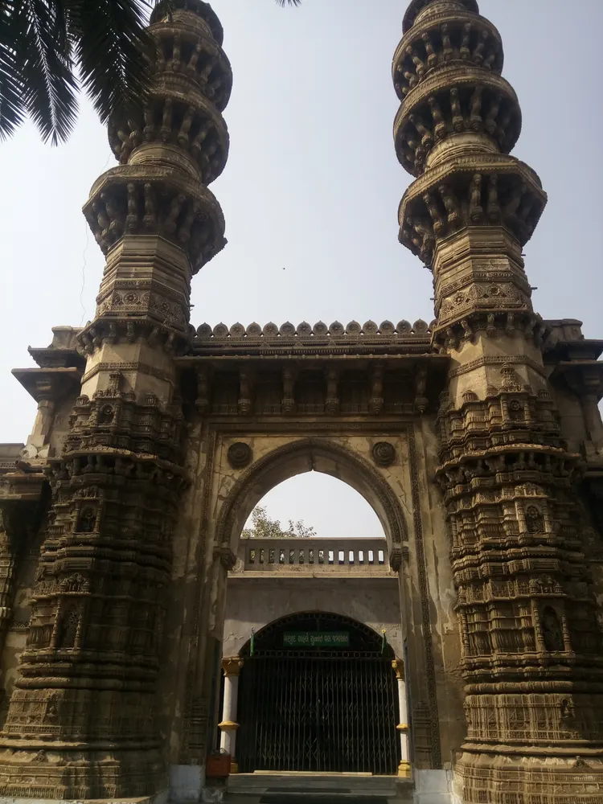

Jhulta Minara, Ahmedabad: An Architecture-First Viewing Guide

Begin with what the official record confirms
AMC Heritage City describes the shaking minarets as three-storey sandstone structures with carved balconies and internal staircases, while also noting damage from weathering. Those observable facts are a sound starting point. Jhulta Minara is often introduced through the mystery of vibration, but a responsible visit should not begin with an attempt to make anything move. Treat the surviving fabric as a fragile heritage structure and read its design before repeating a dramatic explanation copied from an unsourced reel.
Build one complete architectural view
Stand at a permitted distance where both vertical elements and the connecting arch can be read together. This establishing view shows symmetry, proportion and the relationship between the minarets more clearly than an extreme close-up. Keep the camera level to avoid making the towers appear to fall backward; if a wide phone lens introduces distortion, step back rather than forcing the correction later. Include a little surrounding context so viewers understand that the monument sits within a living city, not an isolated archaeological landscape.
Follow the carving from base to balcony
After the wide view, study the structure in bands. Start with the heavier base, move upward through repeated carved sections and finish with the projecting balconies. Look for changes in depth, shadow and pattern instead of trying to name every motif without a reference. Sandstone details read differently as sunlight moves, so a side-lit frame may reveal more than a bright frontal shot. Do not touch, lean on or climb any historic element to create scale.
Do not demonstrate the shaking effect
The popular name can tempt visitors to test the monument. Do not push, strike or vibrate a minaret, and do not ask anyone else to do so for content. Access rules exist to protect both people and masonry, and current restrictions may be different from older accounts. A useful explainer can say that the structures are widely known as the shaking minarets and then focus on what remains visible. If discussing engineering theories, label them as theories and cite a reliable specialist source rather than presenting an online anecdote as settled fact.
Plan for a busy urban setting
The area around a city monument may include traffic, local movement, worship or railway activity. Check the latest access conditions before travelling and keep equipment compact. Never stand in a carriageway for a centered composition, and avoid blocking gates or pedestrian routes. Ambient sound can communicate location, but record it from a safe position. If a person becomes recognisable in your frame, ask permission before making them part of a promotional reel.
Use a five-frame story sequence
A clear sequence needs only five views: the full composition, the central arch, one balcony band, the transition from base to upper storeys and a final context shot. Add a spoken line about the AMC-recorded sandstone construction and weathering. That structure turns a short reel into visual analysis without inventing a visit experience for the audience. Record the filming date and avoid promising current entry, internal stair access or a particular viewpoint unless you confirmed it on that day.
Connect curiosity with conservation
The strongest conclusion is not that the monument is mysterious; it is that careful observation can make damaged heritage legible. Encourage viewers to use official heritage resources, follow on-site instructions and leave the structure untouched. If the site is inaccessible during a visit, film only from a legal public viewpoint and say so. Beyond Soch can promote Ahmedabad by making restraint part of the story: the city’s architecture remains meaningful when creators value evidence, safety and conservation as much as a striking shot.